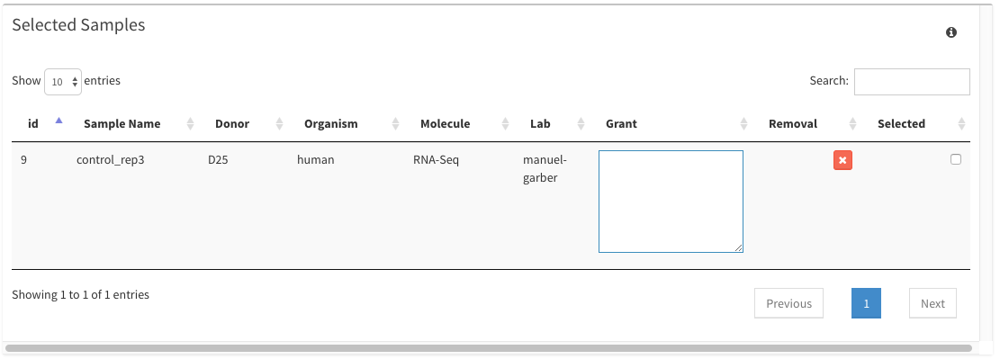
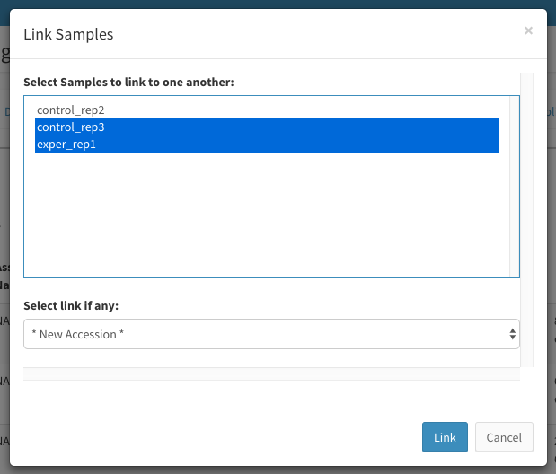
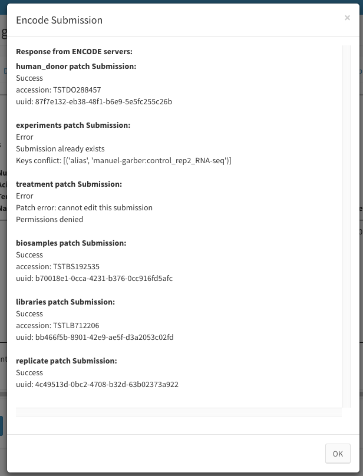
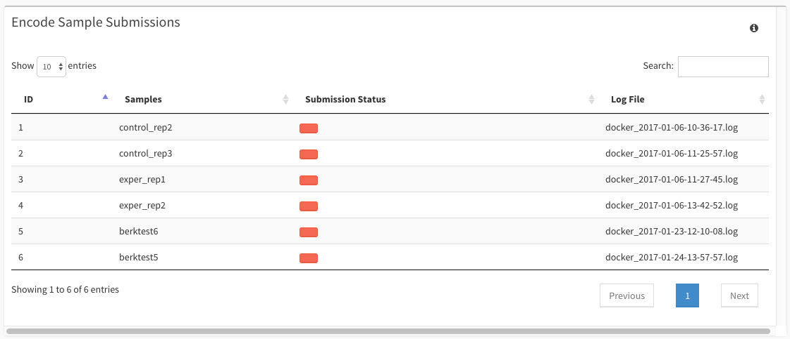
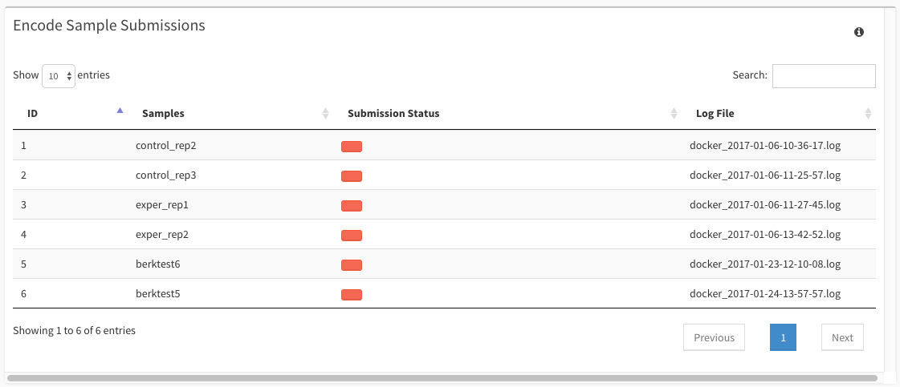

Dolphin ENCODE Submission Guide¶
Getting Started¶
Not everyone can submit to ENCODE, you must first have contact with the ENCODE Consortium before considering to design, create, and analyze a project that you are willing to submit to ENCODE. Please visit the ENCODE website for more details on ENCODE. Not all that apply will be able to submit to ENCODE.
Metadata Collection/Input¶
Assuming you are to submit to ENCODE, you are going to want to collect a various amount of metadata that surrounds your project. This is a crucial step in submitting to encode and without the proper metadata for submission submission will not be possible.
As a curator for your experiment, you are going to want to collect metadata from all stages of the experiment. This includes:
- Protocol information within the wet lab
- Sequencer and sequencing information
- Analysis programs and versions used
- Outline/Goal of your analysis process
These bullet points encompass a large amount of information, however if you keep proper track of all of this information, this will make submission to ENCODE a smooth process.
More information about which fields are required and which fields you should consider keeping track of can be found at the ENCODE website listed above. Additional information can be found by contacting someone from ENCODE directly, or by keeping in contact with your assigned data wrangler.
ENCODE Submission Process¶
The Breakdown
In order for ENCODE to retain the metadata you wish to send them, it must be passed to their servers using JSON objects. A JSON object is a form of organizing data that is easy to read and to create. Encode stores information passed by users within linked json objects using aliases, uuids, and accession numbers.
You will be passing JSON objects created from the metadata you have gathered and input into the Dolphin system in order to represent your experiment and the files you will be sending to encode. For more information on what a JSON object is, you can visit this link for more information.
The Detailed Version
There are 2 major submission phases that include multiple sub-steps along the way. The first phase we shall call the ‘overall metadata submission’ step. For this phase, you will be submitting metadata that encompasses your overall experiment. For this, we submit 7 specific JSON objects in a specific order:
- Donor JSON
- Experiment JSON
- Treatment JSON
- Biosample JSON
- Library JSON
- Antibody JSON
- Replicate JSON
We submit these JSON objects from top to bottom due to the fact that some of the JSONs require the accession number or alias of a previous step. Without this unique identifier, the JSONs cannot be properly linked and will thus not be correct.
Once the overall metadata step has completed successfully, you can then enter the ‘file data’ submission phase. During this phase you will be submitting file metadata, followed by the actual file, given that the file metadata has been successfully submitted. So for each possible file you want to submit you will send:
- File JSON
- The actual file
Once you have completed all of these phases successfully, your submission to ENCODE will be complete and the next step would be to have your data wrangler look over your submission for validation.
Specific Linkages¶
Many objects will have more than one direct link to other various objects within your submission. For instance, some samples will come from the same donor and time point, however one could be an ATAC-Seq analysis while the other could be RNA-Seq analysis. These samples would be sharing the same biosample and need to use the same biosample accession number when submitting experiments for them. Biological replicates will also have to share the same experiment accession number when reporting to ENCODE. Dolphin has a way to link specific biosamples and experiments before submission, which will be discussed further in this guide.
It’s important to note that the structure of submission differs between human and non-human samples. For one, the donor for humans refers to the specific human donor, while for other organisms it refers to the strain of the organism. Biosamples from specific time points will also have to reference a parent biosample using the ‘derived_from’ key, thus needing the accession number of that parent biosample for proper submission.
Metadata Objects¶
Diving deeper into each metadata object being passed, specific metadata will be used to create each JSON. Listing each JSON in order, we include:
- Donors
- Information gathered with experiment series
- “award”:’grant’
- “lab”:’lab’
- Information gathered with samples
- “organism”:’organism’
- “life_stage”:’life_stage’
- “age”:’age’
- “sex”:’sex’
- Experiments
- Information gathered with experiment series
- “award”:’grant’
- “lab”:’lab’
- Information gathered with protocols
- “assay_term_name”:’assay_term_name’
- “assay_term_id”:’assay_term_id’
- Information gathered with samples
- “biosample_term_name”:’biosample_term_name’
- “biosample_term_id”:’biosample_term_id’
- “biosample_type”:’biosample_type’
- “description”:’description’
- Treatments
- Information gathered with treatments
- “treatment_term_name”:’treatment_term_name’
- “treatment_term_id”:’treatment_term_id’
- “treatment_type”:’treatment_type’
- “amount”:’concentration’
- “amount_units”:’concentration_units’
- “duration”:’duration’
- “duration_units”:’duration_units’
- Biosamples
- Information gathered with experiment series
- “award”:’grant’
- “lab”:’lab’
- Information gathered with protocols
- “starting_amount”:’starting_amount’
- “starting_amount_units”:’starting_amount_units’
- Information gathered with samples
- “biosample_term_name”:’biosample_term_name’
- “biosample_term_id”:’biosample_term_id’
- “biosample_type”:’biosample_type’
- “organism”:’organism’
- “derived_from”:’biosample_derived_from’
- “source”:’source’
- Information gathered with lanes
- “date_obtained”:’date_received’
- Libraries
- Information gathered with experiment series
- “award”:’grant’
- “lab”:’lab’
- Information gathered with samples
- “spike-ins”:’spike_ins’
- “size_range”:’avg_insert_size’
- Information gathered with protocols
- “nucleic_acid_term_name”:’nucleic_acid_term_name’
- “nucleic_acid_term_id”:’nucleic_acid_term_id’
- “extraction_method”:’extraction_method’
- “crosslinking_method”:’crosslinking_method’
- “fragmentation_method”:’fragmentation_method’
- Antibodies
- Information gathered with experiment series
- “award”:’grant’
- “lab”:’lab’
- Information gathered with Antibodies
- “source”:’source’
- “product_id”:’product_id’
- “lot_id”:’lot_id’
- “host_organism”:’host_organism’
- “targets”:’targets’
- “clonality”:’clonality’
- “isotype”:’isotype’
- “purifications”:’purifications’,
- “url”:’url’
- Replicates
- Information gathered with samples
- “biological_replicate_number”:’biological_replica’
- “technical_replicate_number”:’technical_replica’
To better understand these lists, Let us break them down into how you should be reading them.
- First Layer
- Second Layer
- Third Layer
- Third Layer
- Second Layer
- Third Layer
- Third Layer
The first layer describes which JSON object we are currently creating. The second layer describes which major table from the database that the information will be gathered from. The third layer explains two things, first the JSON field that will act as the key to the object and the second is the field from the database we are gathering to insert as the actual metadata.
File Objects¶
File metadata submission will have some similar fields and some different. The JSON fields are all dependent on the file type that is being submitted. The JSON object passed for each file type will have the following fields:
- Fastq files
- “file_format”:”fastq”
- “run_type”:’run_type’
- “step_run”:’step_run’
- “paired_end”: ‘1’ OR ‘2’
- “output_type”:”reads”
- “read_length”:’read_length’
- “paired_with”:<paired-end alias>
- “derived_from”:<alias of derived file> AND/OR ‘additional_derived_from’
- BAM files
- “file_format”:”bam”
- “run_type”:’run_type’
- “step_run”:’step_run’
- “output_type”:”alignments”
- “assembly”:’genome’
- “derived_from”:<aliases of derived files> AND/OR ‘additional_derived_from’
- TSV files
- “file_format”:”TSV”
- “run_type”:’run_type’
- “step_run”:’step_run’
- “output_type”:”gene quantifications” OR “transcript quantifications”
- “assembly”:’genome’
- “derived_from”:<aliases of derived files> AND/OR ‘additional_derived_from’
- bigWig files
- “file_format”:”bigWig”
- “run_type”:’run_type’
- “step_run”:’step_run’
- “output_type”:”signal of all reads”
- “assembly”:’genome’
- “derived_from”:<aliases of derived files> AND/OR ‘additional_derived_from’
- bed files
- “file_format”:”bed”
- “run_type”:’run_type’
- “step_run”:’step_run’
- “output_type”:”peaks”
- “assembly”:’genome’
- “file_format_type”:”narrowPeak”
- “derived_from”:<aliases of derived files> AND/OR ‘additional_derived_from’
As a reference to the above list, every left field will be the actual key to the JSON and the right field will be the value associated to that key. Values wrapped in double quotes are preset string values, such as file_format’s value being “fastq” for a fastq file, while values wrapped in single quotes are values gathered from the database under that field name. Values defined with the “<>” markers are referencing aliases created using the samplename, lab, step, and file format.
In addition to those fields, each JSON passed will additionall contain these fields:
- “dataset”:’experiment_acc’
- “replicate”:’replicate_uuid
- “file_size”:<byte size of file>
- “md5sum”:<md5sum of file>
- “platform”:’platform’
- “submitted_file_name”:<name of file>
- “lab”:’lab’
- “award“‘grant’
- “flowcell_details”:
- “machine”:’machine_name
- flowcell”:’flowcell’
- “lane”:’lane’
In this case, any value field marked with the “<>” markers are defined based on the file you are submitting. Dolphin creates files based on samplename, so manual entry is not required.
Upon successfully submitting file metadata, ENCODE will pass back a JSON response with amazon credentials. These credentials are then used to upload the specific file to their secure amazon databank.
The Submission Process¶
As stated above, submitting to ENCODE through Dolphin is easy as long as you have all the proper metadata. You don’t have to worry if you didn’t input all of the information needed during the import since you will be able to edit all of the fields before submission.

In order to start the ENCODE submission process, you are going to want to select the samples you wish to submit within the NGS Browser section of Dolphin. Once you’ve selected your samples you then can click the ‘Data Selection Options’ button at the top of the page and select the ‘Send to ENCODE’ option. This will take you to the ENCODE submission page.

Loading in, you will see a variety of tabs and tables. Each tab represents submission of a specific JSON object and each contains a table with information loaded based on the samples that you have selected. The ‘Sample Selection’ tab allows you to view the samples you have selected in the top table and add more samples from the bottom table. You can also remove samples by clicking the red ‘X’ button in the top table for each sample, or manually deselecting the sample from the bottom table. You can also edit specific metadata within each table shown by simply clicking the field you wish to edit and pressing enter when you are finished. It should be noted that not all fields are editable. In addition to editing samples, you can also edit all of your selected samples for that field at once or on a selection basis. Simply click on the field you wish to edit, edit that field, and click the ‘Change All’ button to change all of your samples for that field at once. You can select specific samples on the right and then click the ‘Change Selected’ in order to change multiple samples at a time.

If no treatments are linked to your samples you can create them within the ENCODE submission page on the ‘Treatments’ tab. To create a treatment click on the ‘Add Treatment’ button and a dialog box will pop up. In this dialog box you will select which samples will have this treatment, as well as the name of the treatment. Once you are finished you can click the ‘Add’ button to add the treatment link for your samples and start editing the treatment metadata as you see fit. This same adding and editing strategy applied to the ‘Antibodies’ tab as well.

As stated above, you can also link biosamples and experiments together via samples in the ‘Biosamples’ or ‘Experiments’ tabs. Simply click on the ‘Link Biosamples’ or “Link Experiments’ tab to bring up a dialog box displaying all of the samples you have selected. From there, select the samples you wish to link together, and then select which accession number you wish to link them under. If no accession number is present, you can select ‘* New Accession*’ to link the samples together without an accession number present.
The ‘Files’ tab will be the last tab to be filled out before submitting your metadata and files. If you have filled out all of your metadata within the tables, you can go ahead and send the overall metadata without the file metadata and files by selecting the ‘Submit Meta-data’ button in the bottom left. Within the ‘Files’ tab there are 4 major components: run selection, file selection, submission order, and previous files submissions.

The run selection section should be looked at first. For each sample you need to determine which dolphin run for each sample has the analysis files you wish to use. Once you’ve selected all the proper run information, the file selection section will be next. Here you will be able to select multiple file types to submit to ENCODE. Only files produced between all selected runs will be able to be selected. After file type selection, we then can determine the order and the hierarchy of all the files being submitted as well as any other additional information that may need to be provided. Step run and additional derived from parameters should be supplied by your data wrangler once they have created your analysis pipeline objects within the ENCODE system.
The last table, previous file submissions, simply displays previous submissions from the samples that have been selected.
Once all the appropriate information has been filled out, you’re ready to submit to ENCODE. Press the submit button which you desire on the bottom left of the screen and confirm the submission to send the data!
Reading the Output¶
Output for the submission process will take place in a few different locations. For one, you’ll be able to view your output if you have access to editing ENCODE information on the main site using the accession numbers given back to the user. However, through dolphin there are two main location as of currently where you will be able to view the output. The submission dialog box will report a condensed version of the JSON submission output to the user and the raw JSON output for the file as well. Additional logs are kept within the dolphin system in the tmp/encode directory via your user name and the time you submitted to ENCODE.
ENCODE Submissions Page¶
If you click on the bottom right button labeled ‘View Encode Submissions’, you will be taken to a new page with some information about your previous submissions.
 

There are two tables present on this page, the ‘Encode Batch Submissions’ table and the ‘Encode Sample Submissions’ table. The first table, the encode batch submissions table, displays all of the group submissions and the sample numbers that were submitted together. The submission status column denotes whether or not metadata from all samples is still up to date; green denoting that the metadata is up to date and red showing that it has changed since that submission. In addition the data log’s name is displayed for an admin to view until other options have been implemented. You can also choose a sample selection to re-submit which will select all the samples from that submission and send you to the ENCODE submission pipeline. The bottom table shows the exact same information as the top table except it is on a per-sample scale.